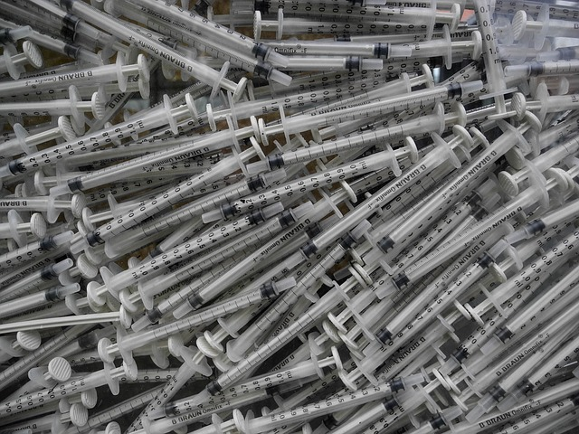

HOW THE PRESIDENCY WAS WON
By Phil Oh'Really and Seann Spicegirls
The president has said it, pure and simple he just won.
On the surface, such declaration is obvious, but the
election was not pure and simple. New revelations from
apocryphal sources cast a serious doubt on our democratic
process, The Flake News has learned. These revelations
show that a massive complot orchestrated by an obscure
conspiracy group know as “The Infuriaty”, paid millions
of dollars in Internet campaigns to discredit the electoral
process. The goal of such campaigns was to create a sense
of disbelief in voters, so they wouldn’t vote. A source,
who declined to be identified, said that The Infuriaty
approached this person and offered ten million dollars to
create a website providing news that would achieve that goal.
Another source, which only allowed us to use his profession,
he is a famous clown, told us that he was approached to become
the face of the campaign. He said he declined because our
democracy is so perfect that always the perfect candidate always
wins. At the end, our investigation suggests that the actions
by The Infuriaty had no effects on the electoral process.
Voters represented only a portion of the electorate, as usual,
but they were enough to decide the results. The clown was right,
the perfect candidate for that model won. Despite this normal
outcome, we found out that The Infuriaty is believed to have
designed our democratic process, and that they were only testing
their own electoral machine. We can only assume pure and simple
that it is working for them.
Back to Top of Page
Wiretapping Took Place in The Matrix!
By Morpheus A. Gent-Smith
The government is now blaming a so-called "portal in the Matrix"
for the alleged wiretapping to the President. The intelligence
community has denied any knowledge of "something called Matrix", but
declined an official response to media inquiries.
Government officials, and members of the official party on the
other hand, demanded an investigation. At a press meeting, the
President mentioned he felt troubled by the news. When several
reporters pressed him for a more direct answer, he stated that
the information was provided to him directly by a source he
called, "the lady Oracle", but declined to specify more on the
issue or the identity of this source. The President left abruptly
due to a medical problem, but a spokeperson said that it was only
because he needed to take his daily pills. Apparently, he had
forgotten if the pills he needed where the red or the blue
ones.
Statue of Liberty to be Deported to France
By Mer Le Pencil
The Statue of Liberty may be gone soon if an immigration court
decision stands. The Court decided to deport the statue back to France
after attorneys for the government declared in the court
that there wasn't any proof that the statue was in the country
legally. The City is appealing the decision to a superior court stating
that after all these years in national soil, the statue must be allowed
a recognition of citizenship. If the Court decision favors the City,
there are already plans for a fireworks party and an official
naturalization ceremony.
On the other hand, if the Court keeps its current deportation decision,
the statue must be retuned to France, and government officials said
that they will hold a deportation party, also with fireworks. The
French government hasn't release a statement yet, but the conservative
party declared that they don't want any symbol of immigrants in their
country, and therefore the statue should be sent elsewhere.
Jobs
By Unem Ployd
The government is happy, jobs are everywhere. The recent
official job report shows that everyday people are employed.
We decided to go to the streets and ask around opinions on
the job report. When we asked people about the positive results in the
report, they say they believe them as four out of five said to be
employed recently. On the other hand, when we asked them
about their salaries, they sais that they were not getting paid.
According to them, it is a new government policy, get hired today
and maybe get paid later.
Forget About Healthcare
By Jard Kuchrep Publikan

The gorvernment is no longer interested in having
a health care system for all. The new policy, which soon
will be presented in Congress, is a a
do it yoursel helath system. This new proposal estimates
that millions of syringes will be distributed accross the
country along with a medicine that cures everything.
In this new system all you need to do is obtain both, applied
it yourself, and then forget about it. In fact, some
proponents of the policy within the administration, have
promoted the name "Forget About It Care!" as the official name.
We askked the President, but all he responded to us was,
"forget about it".
Area 51 Sold to China
By Adolf H. "Steel" Dannon

Area 51 is gone. China bought the ultra secret
extrarestial base and now it is located in Northern
China. Everything that was in that base has been
shipped out to that country, including alien
ships, and the recuperated corpses of the aliens that
crashed in Roswell in the 50's. All that is left where
the base was located is an inmense desert. The good news
according to intelligence sources closed to the
president is that the money from the purchase will be used
to build a wall that impede the presence of the other
"aliens".